Director-level creative and AI leadership. I redesign how teams produce: proprietary software, automation frameworks, training and creative direction. 80+ projects across 6 industries.
AI-first strategy that de-risks budgets before a single pixel ships. ROAS sustained at 10×, cost per lead down to €5 in regulated markets.
Custom AI frameworks: viral-content engines, internal apps built with Claude Code, n8n and Make automations, CRM orchestration. One loop that compounds revenue.
Art direction and storytelling engineered for demand: 600K views in week one, +4,300% community growth in four months.
Live dashboards and AI reporting pipelines. Every euro tracked, every creative iterated on data, every decision defensible in the boardroom.
100% on-time delivery, satisfaction above 85% — the last 1% is where trust is built.
Viral-content engines that script, generate and publish on autopilot. Internal apps and CRMs built with Claude Code in days, not quarters. Custom web builds: CSS motion systems, Shopify Liquid, headless storefronts. Workflows that run your ops while you sleep.
Paid growth is an engineering problem: measure, iterate, scale what compounds. I run SEM and paid social as one system, wired end to end into analytics.
Search and Discovery campaigns with intent-mapped keyword architecture and ad copy tested at scale. Benchmark in regulated legal: 1.5%. Quality Scores of 9-10 drive the auction price down for every click after.
Message-matched pages per ad group: metadata and structured data tuned, Core Web Vitals in the green, forms stripped to the decision. Industry average sits at 2-3%. The gap is the margin.
Winning angles cloned across markets, audiences and platforms with a naming and testing system that keeps attribution clean. Growth by surface area, not by burn.
Budgets multiplied on validated creatives while cost per acquisition kept falling. Scaling rules defined in advance: thresholds, kill-criteria, and SEO foundations underneath so the traffic you win is traffic you own.
Campaigns are the visible layer. The real work is underneath: I design and ship the proprietary software, CRMs and platforms that change what a team can output, permanently.
Designed, built and shipped a full content-production platform: ideation, AI generation, review workflow, brand enforcement and publishing in one pipeline. One operator now matches the output of a twenty-person studio: 500+ assets a month at 92% lower cost per asset.
Custom CRM with deal flow, WhatsApp and email orchestration, attribution and reporting baked in. Replaced a stack of licences, cut tool-switching to zero and lifted pipeline velocity 31% in the first quarter.
Built an owned community platform with courses, events and payments. 68% weekly activity, zero platform fees, full data ownership. The audience became an asset on the balance sheet, not a rented row in someone else's database.
Tools don't transform companies. People do. I train marketing, production and ops teams to run AI-first workflows, hands-on and on their real work, until the new way is the default way.
From first workshop to a self-running AI operation in 90 days. That is the mandate I take.
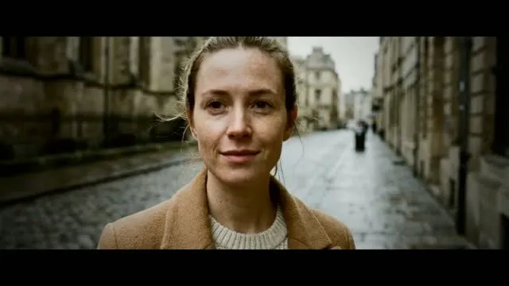
▶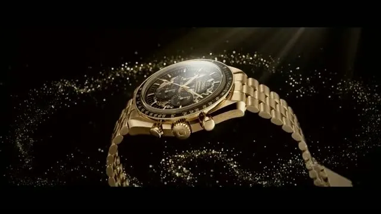
▶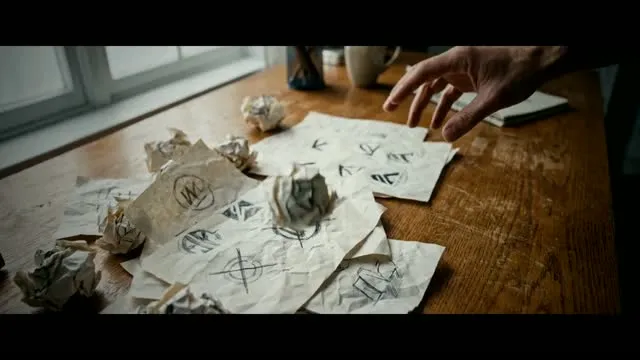
▶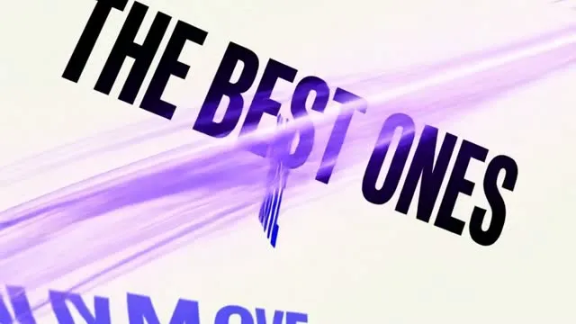
▶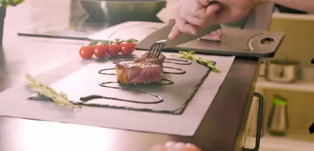
▶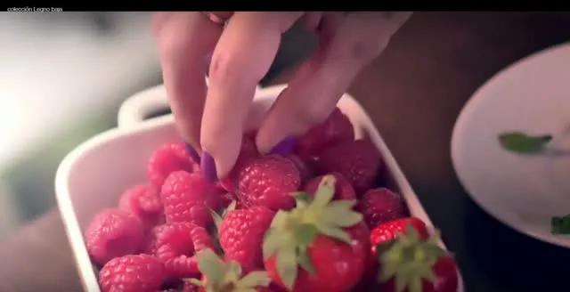
▶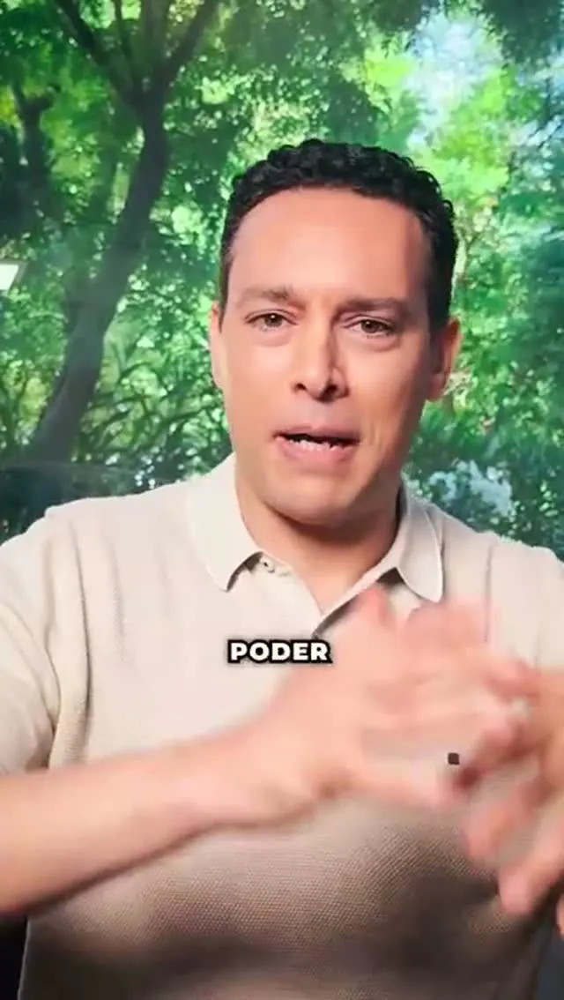
▶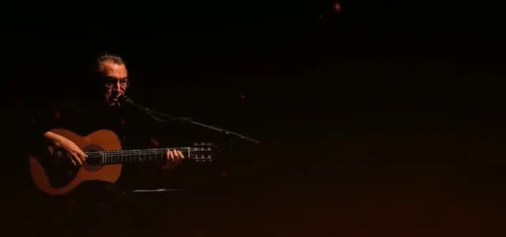
▶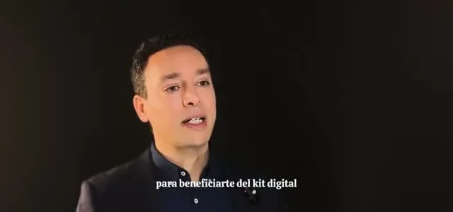
▶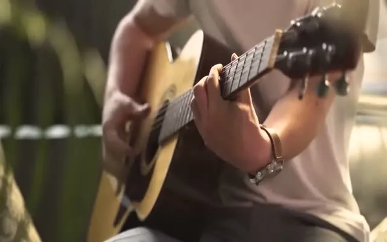
▶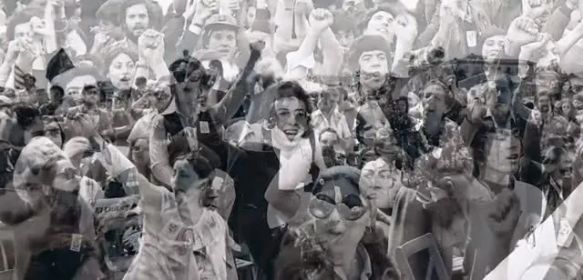
▶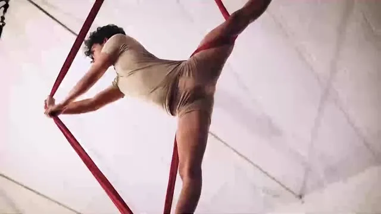
▶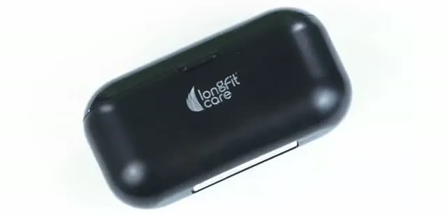
▶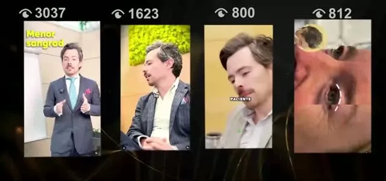
▶